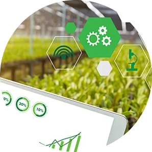
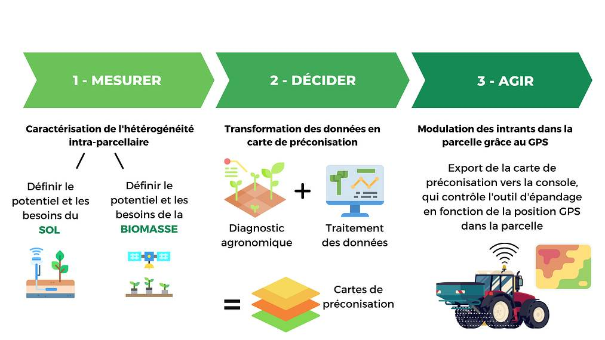

|  | precision agriculture |
L’agriculture de précision est un ensemble de techniques et de pratiques visant à limiter l’utilisation directe d’intrants dans les parcelles agricoles. Elle prend en compte l’hétérogénéité intra parcellaire afin d’ajuster la dose d’intrants en quantité, en temps et en lieu (modulation) pour essayer d’améliorer le bilan économique, agronomique et environnemental des exploitations agricoles.
Son but est d’adapter l’intervention de l’agriculteur sur la parcelle en utilisant des données collectées à partir de matériels sur le champ (GPS embarqué, station météo connectée…) ou par télédétection (images de drones ou de satellites). Ces données sont traitées par des logiciels embarqués ou déportés pour piloter des actionneurs (épandeurs, pulvérisateurs, semoirs, …) et mémorisées de manière centralisée pour visualiser et analyser les opérations effectuées sur l’exploitation . Cette approche est aussi appliquée à l’élevage de précision (distributeurs automatiques de concentrés, …).
L'agriculture de précision englobe de nombreuses technologies, outils et pratiques comme la modulation de doses. Cette pratique est effectuée en plusieurs étapes et nécessite plusieurs outils comme les images satellites ou les drones afin de recueillir et traiter des données dans le but de mesurer l'hétérogénéité intraparcellaire.
| matériels | fonctions |
|---|---|
| robots | simplifie le travail de l’agriculteur tout en améliorant l’efficacité et en baissant les coûts de production |
| les drones | l’état de vigueur et le statut hydrique de la culture afin de détecter les déficits6 d’irrigation. Ils peuvent également détecter la présence de ravageurs sur une zone déterminée de l’exploitation et d’autres informations utiles. |
| Les application | Les applications mobiles ont tenu depuis leur apparition un rôle très important dans la digitalisation de l’agriculture. Et réunissant toutes les opérations que vous réalisez, vos dépenses, vos revenus, vos rapports demandés lors des contrôles |
| les capteurs | Certaines données sont immédiatement disponibles, comme la température du sol, le taux d’humidité, le statut hydrique de la culture, etc. Il est ainsi possible de connaître l’état des parcelles agricoles sans être à proximité et d’optimiser l’utilisation des intrants . |